การทดลองใช้งานบอร์ดไมโครคอนโทรลเลอร์ Teensy 4.0 & 4.1#
▷ แนะนำบอร์ดTeensy#
Teensy เป็นบอร์ดไมโครคอนโทรลเลอร์ที่ได้มีการพัฒนาโดย Paul Stoffregen และบริษัท PJRC.COM อยู่ในเมือง Sheerwood มลรัฐ Oregon (USA)
ผู้พัฒนาบอร์ด Teensy ได้เลือกใช้ไมโครคอนโทรลเลอร์ที่สามารถเชื่อมต่อกับ USB ได้โดยตรง (USB Native) ไม่มีวงจรหรือชิปประเภท USB-to-Serial Bridge บอร์ด Teensy รุ่นแรก เช่น Teensy 1.0 & 2.0 เริ่มจำหน่ายในราวปีค.ศ. 2008 ใช้ชิป 8 บิต Atmel ATmega32U4 และบอร์ด Teensy 2.0+++ ใช้ชิป AT90USB1286 แต่ในปัจจุบันได้เลิกผลิตบอร์ดประเภทนี้แล้ว
บอร์ด Teensy ที่เริ่มต้นใช้ชิปไมโครคอนโทรลเลอร์ 32 บิต (Arm Cortex-M Series) คือ บอร์ด Teensy 3.0 ตามมาด้วย Teensy 3.1 & 3.2 และ Teensy 3.5 & 3.6 ตามลำดับ ผู้พัฒนาใช้วิธีการระดมทุนจาก Kickstarter Crowdfunding [→]
Teensy USB Development Boards
- 8-bit MCU boards (1st Generation, retired)
- Teensy 1.0 (2008), Teensy 2.0 (2009)
- Teensy++ 2.0 (2012)
- 32-bit ARM-based MCU boards (2nd Generation)
- Teensy 3.0 (2012)
- Teensy 3.1 & 3.2 (2014)
- Teensy-LC (2015)
- Teensy 3.5 & 3.6 (2016)
- 32-bit ARM-based MCU boards (3rd Generation)
- Teensy 4.0 (2019)
- Teensy 4.1 (2020)
ผังวงจรของบอร์ด Teensy ในแต่ละรุ่น สามารถดูได้จาก Teensy Schematic Image Files (รูปไฟล์กราฟิก)
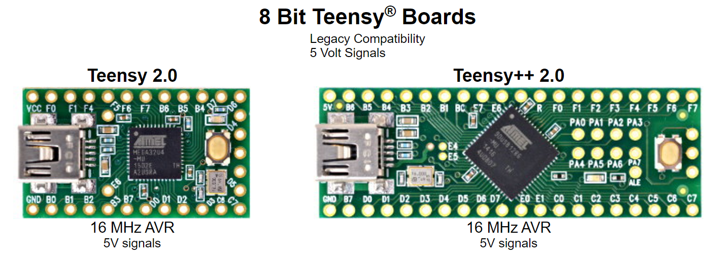
รูป: บอร์ด Teensy 2.0 (Source: PJRC.COM)
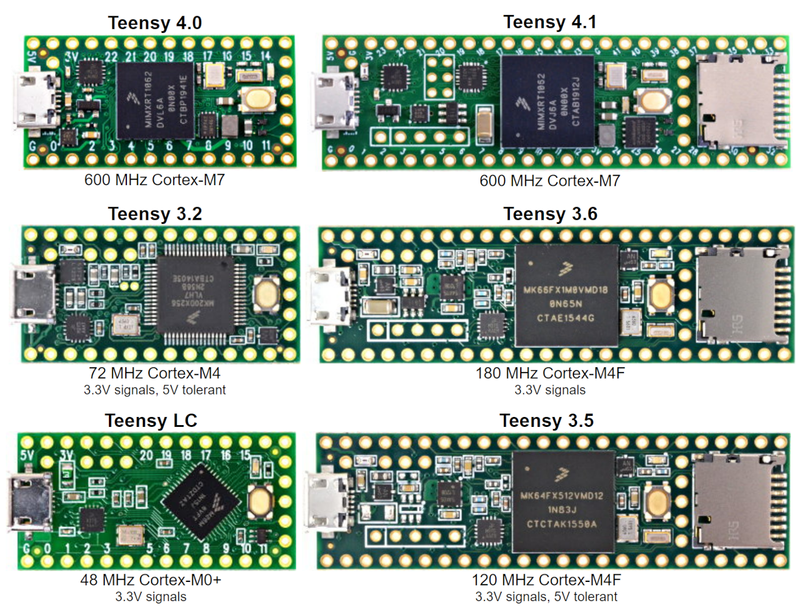
รูป: บอร์ด Teensy 3.x และ 4.x (Source: PJRC.COM)
ตารางเปรียบเทียบระหว่างบอร์ด Teensy ทุกรุ่นสามารถดูได้จาก Teensy Technical Specifications
รูป: ตารางการเปรียบเทียบระหว่างบอร์ด Teensy (Source: PJRC.COM)
บอร์ด Teensy 3.x ซึ่งถือว่าเป็นบอร์ดในรุ่นที่ 2 และได้เลือกใช้ชิป Kinetis K-Series ของบริษัท Freescale (ถูกซื้อกิจการโดย NXP) เป็นตัวประมวผลหลัก เช่น
- Teensy 3.0: MK20DX128VLH5 (Kinetis K20, Arm Cortex-M4, 50MHz, 160KB Flash, 16KB SRAM)
- Teensy 3.1 & 3.2: MK20DX256VLH7 (Kinetis K20, Arm Cortex-M4, 72MHz, 288KB Flash, 64KB SRAM)
- Teensy 3.5: MK64FX512VMD12 (Kinetis K64: Arm Cortex-M4F, 120MHz, 512KB Flash, 128KB FlexMem, 256KB RAM)
- Teensy 3.6: MK66FX1M0VMD18 (Kinetis K66: Arm Cortex-M4F, 180MHz, 1280KB Flash, 256KB SRAM)
ภายในมีซีพียู ARM Cortex-M4/M4F และแตกต่างกันไปตามความเร็วของซีพียู ขนาดของหน่วยความจำ SRAM และ Flash วงจรภายใน (Peripherals) เช่น UART, SPI, I2C, I2S, ADC, DAC, USB, CAN, Ethernet เป็นต้น
Teensy LC (Low-Cost) เป็นบอร์ดรุ่นพิเศษที่มีราคาถูกว่า Teensy 3.1 & 3.2 แต่ใช้ชิป MKL26Z64VFT4 (Kinetis L26: Arm Cortex-M0+, 48MHz, 64KB Flash, 8KB SRAM)
บอร์ด Teensy 4.0 และ ** Teensy 4.1** ซึ่งถือว่าเป็นบอร์ดในรุ่นที่ 3 มีราคาสูงกว่าบอร์ดรุ่นก่อน และได้เริ่มเปลี่ยนมาใช้ชิป NXP i.MX RT1060 Series ซึ่งภายในมีซีพียู ARM Cortex-M7 ( ARMv7E-M architecture, in-order, dual-issue superscalar instruction pipeline with branch prediction) ที่มีความสามารถในการคำนวณได้สูงกว่า ARM Cortex-M4F และชิปรุ่นนี้สามารถทำงานด้วยความถี่ได้สูงถึง 600MHz (หรือปรับเลือกความถี่ให้ต่ำลงมาได้) แต่ชิปไมโครคอนโทรลเลอร์ของ NXP บนบอร์ด Teensy 4.0 & 4.1 ไม่มี DAC ซึ่งแตกต่างจากบอร์ดรุ่น 3.x ที่มี DAC Outputs
บอร์ด Teensy 4.0 & 4.1 สามารถใช้งาน Hardware Serial / UART
ได้ถึง 7 หรือ 8 ช่องทาง ตามลำดับ (TX1/RX1 - TX8/RX8 ซึ่งอ้างอิงโดยใช้ชื่อ Serial1 ถึง Serial8 สำหรับการเขียนโปรแกรมด้วย Arduino)
ดังนั้นจึงเหมาะสำหรับงานที่ต้องมีการสื่อสารในลักษณะนี้หลายช่องทางพร้อมกัน
MicroMod Teensy เป็นอีกบอร์ดหนึ่งที่เกิดจากความร่วมมือระหว่างบริษัท PJRC และ Sparkfun และใช้ชิปไมโครคอนโทรลเลอร์เหมือนกับบอร์ด Teensy 4.0
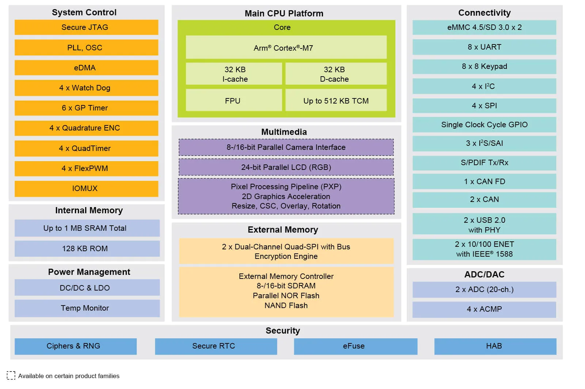
รูป: ผังองค์ประกอบภายในของชิป NXP i.MX RT1060 Series
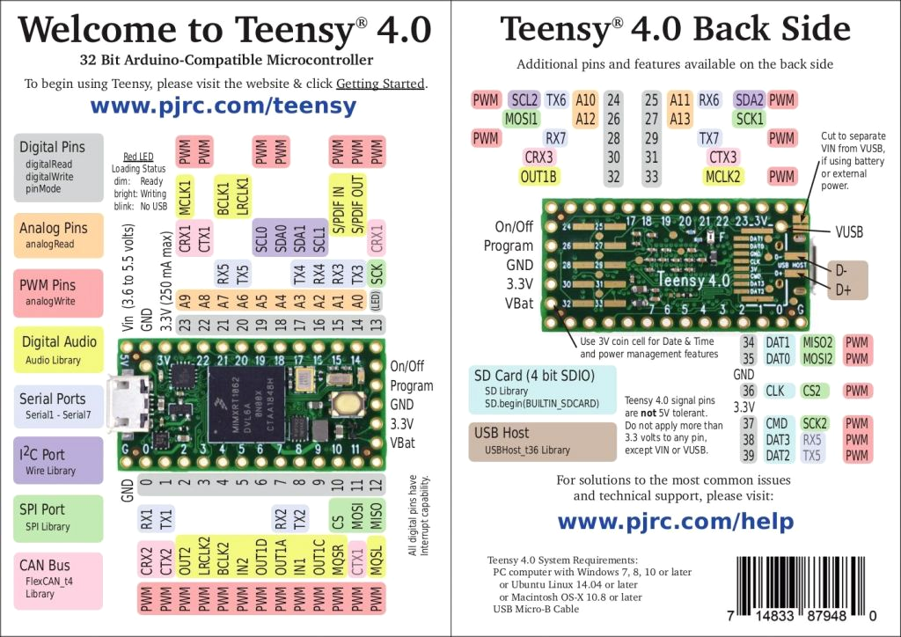
รูป: Teensy 4.0 Pinout (Source: PRJC)
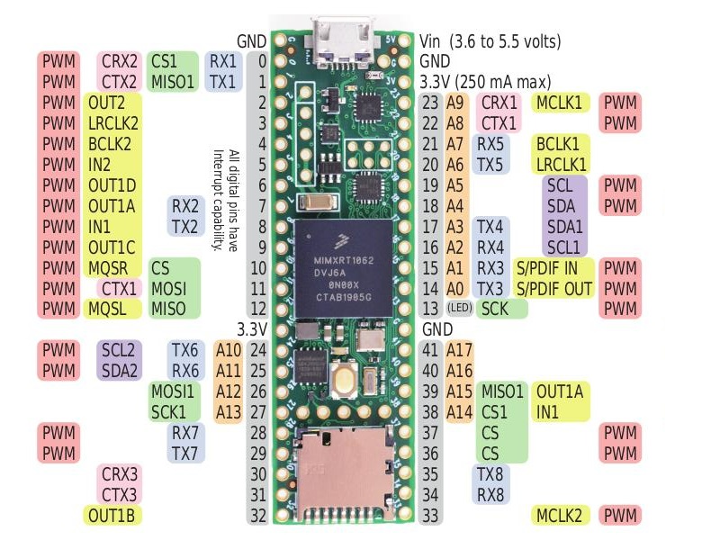
รูป: Teensy 4.1 Pinout (Source: PRJC)
บอร์ด Teensy 4.0 & 4.1 มีชิป MCU อีกหนึ่งตัวคือ NXP MKL02Z32VFG4 หรือ GigaDevice GD32E230F8 เรียกว่า Teensy 4.x Bootloader Chip ที่เชื่อมต่อกับชิป i.MX RT1060 ด้วย JTAG และมีขาสัญญาณอื่นๆ ที่ใช้สำหรับควบคุมการรีเซต ลำดับการจ่ายไฟเลี้ยง และการเลือกโหมดเริ่มต้นการทำงาน (Reset / Power-up Sequence) ให้แก่ชิป i.MX RT1060
ถ้ากดปุ่ม Program Button บนบอร์ด (ซึ่งไม่ใช่ปุ่ม Hardware Reset) จะทำให้ชิป i.MX RT1060 เข้าสู่ Bootloader Mode โดยโหลดโปรแกรมขนาดเล็ก (Recovery Program) จากไอซีหน่วยความจำ Winbond W25Q16JVUXIM QSPI Flash มาใส่ใน SRAM แล้วเริ่มทำงาน เพื่อรอการเชื่อมต่อจากคอมพิวเตอร์ของผู้ใช้ผ่านทาง USB
การอัปโหลดไฟล์เฟิร์มแวร์ .hex สำหรับบอร์ด Teensy 4.0 & 4.1 จะใช้วิธี USB Bootloader เป็นหลัก ผ่านทาง USB และทำงานร่วมกับโปรแกรม Teensyloader ในเครื่องคอมพิวเตอร์ของผู้ใช้ ดังนั้นวิธีการดีบักด้วยอุปกรณ์หรือฮาร์ดแวร์ JTAG หรือ SWD / CMSIS-DAP ไม่สามารถใช้ได้กับบอร์ดนี้
นอกจากโปรแกรม Teensyloader (GUI) แล้ว ยังมีโปรแกรม Teensy Loader (CLI) ที่ทำงานแบบไม่มี GUI ให้ใช้งาน โปรแกรมนี้เขียนด้วยภาษา C และเป็น Open Source
▷ ความเร็วในการประมวลผลของบอร์ด Teensy#
Paul Stoffregen ได้แชร์โค้ดสำหรับการวัดประสิทธิภาพของซีพียู โดยเลือกใช้ CoreMark ซึ่งเป็น CPU Benchmark สำหรับชิปไมโครคอนโทรลเลอร์ ถ้าค่าตัวเลขที่ได้ยิ่งสูงแสดงว่า มีประสิทธิภาพในการประมวผลได้สูงกว่า จากตารางจะเห็นได้ว่า Teensy 4.0 ได้ค่าสูงกว่าบอร์ดไมโครคอนโทรลเลอร์รุ่นอื่นที่ได้มีการเลือกและนำมาเปรียบเทียบกัน
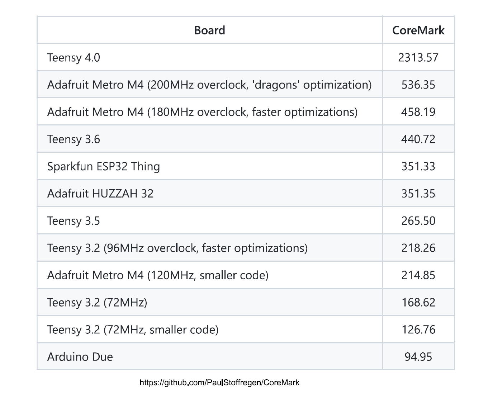
รูป: ตารางเปรียบเทียบผลการทดสอบและเปรียบเทียบบอร์ดไมโครคอนโทรลเลอร์โดยใช้ CoreMark
บอร์ด Teensy 4.0 & 4.1 สามารถทำงานด้วยความถี่ของซีพียู 600MHz หรือสูงกว่า (Overclocking, up to 1GHz) แต่จะต้องมีวิธีระบายความร้อนอย่างเหมาะสม เช่น ติดตั้งแผงระบายความร้อน (Heatsink) เป็นต้น การปรับความถี่ให้ลดลงหรือสูงขึ้นก็ส่งผลต่อปริมาณการใช้กระแสไฟฟ้าของบอร์ดจากแหล่งจ่าย
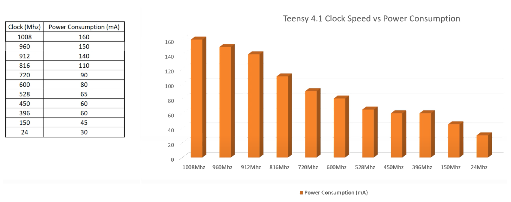
รูป: ความสัมพันธ์ระหว่างความถี่และปริมาณกระแสที่ใช้สำหรับบอร์ด Teensy 4.1 (Source: VisualMicro)
▷ ซอฟต์แวร์สำหรับการเขียนโปรแกรม Arduino เพื่อใช้งานกับบอร์ด Teensy#
ผู้ใช้บอร์ด Teensy สามารถเขียนโปรแกรมด้วย Arduino Sketch ได้ โดยใช้ซอฟต์แวร์ Arduino IDE (เวอร์ชันคลาสิกและเวอร์ชันใหม่ตั้งแต่ 2.0) หรือจะใช้ VS Code IDE + PlatformIO ก็ได้เช่นกัน
ในกรณีที่ใช้ Arduino IDE ให้เพิ่มรายการสำหรับ "Additional boards manager URLs" ดังต่อไปนี้
https://www.pjrc.com/teensy/package_teensy_index.json
แล้วติดตั้ง Arduino-Teensy Core ซึ่งมาพร้อมไลบรารีและตัวอย่างโค้ดที่เกี่ยวข้อง
ตัวอย่างการใช้งาน Arduino IDE (v2.0.3) สำหรับบอร์ด Teensy
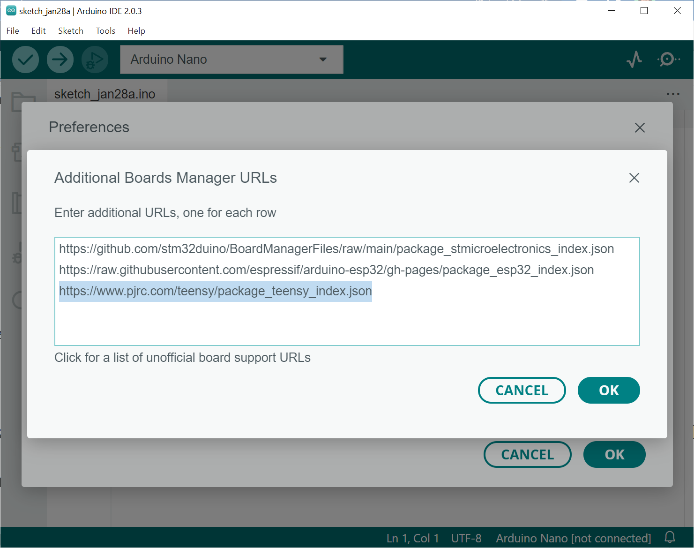
รูป: การเพิ่มรายการ URL สำหรับ Teensy Board Manager (v1.57.1) ใน Arduino IDE
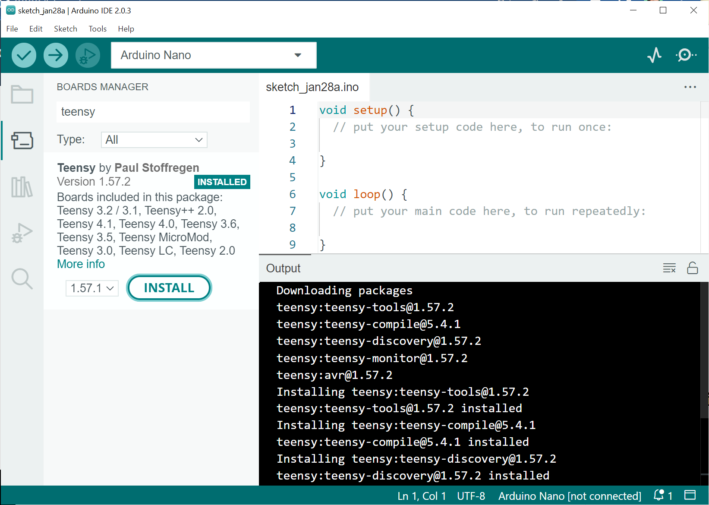
รูป: ตัวอย่างการติดตั้งซอฟต์แวร์ที่เกี่ยวข้องกับ Teensy Board Manager (v1.57.1)
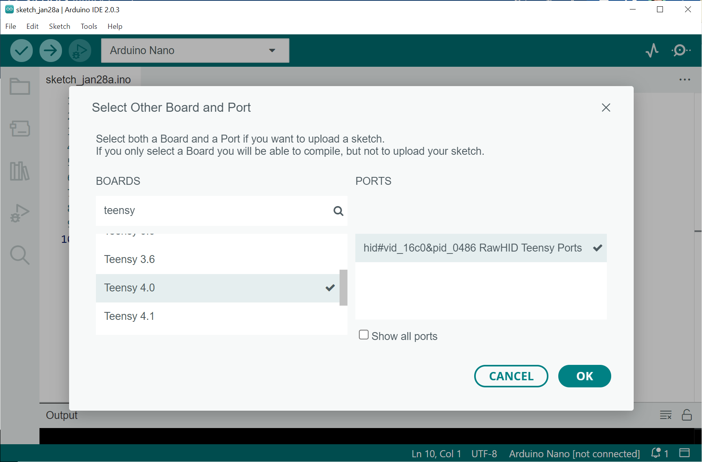
รูป: การเลือกบอร์ดจากรายการ: Teensy (v4.0) เป็นบอร์ดเป้าหมายในการเขียนโค้ด Arduino Sketch
ตัวอย่างโค้ด: LED Blink ทำให้ LED ที่อยู่บนบอร์ด Teensy 4.0 & 4.1 กระพริบ และส่งข้อความผ่านทาง Serial
#include <Arduino.h>
const int LED_PIN = 13;
void setup() {
Serial.begin(115200);
while (!Serial);
Serial.println("Arduino - Teensy 4.0 Demo....");
pinMode( LED_PIN, OUTPUT );
}
void loop() {
static uint32_t state = 0;
digitalWrite(LED_PIN, state ^= 1);
Serial.printf("[%06u] LED state: %u\n", millis(), state);
delay(500);
}
หลังจากได้คอมไพล์โค้ดสำหรับ Arduino Sketch และได้เลือกพอร์ต Serial ได้ถูกต้องแล้ว เมื่อกดปุ่ม Upload จะมีโปรแกรมชื่อว่า Teensyloader ทำงานโดยอัตโนมัติ และไฟล์ .hex ของโปรเจกต์ จะถูกอัปโหลดไปยังบอร์ด Teensy
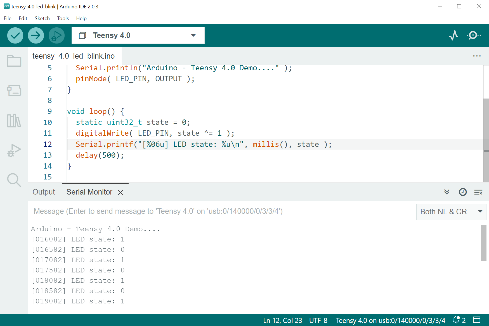
รูป: ตัวอย่างข้อความเอาต์พุตที่ได้รับใน Arduino Serial Monitor
ตัวอย่างโค้ดถัดไปสาธิตการเปลี่ยนค่าความถี่ของซีพียู (เช่น เลือกค่าในช่วง 24MHz .. 960MHz)
โดยใช้คำสั่ง set_arm_clock(...)
และลองจับเวลาในการนับตามจำนวนครั้งที่กำหนด ถ้าใช้ความถี่สูงขึ้นจะใช้เวลาน้อยลงในการนับจนครบตามจำนวน (กำหนดไว้โดยค่าคงที่ MAX_COUNT)
ตัวแปร F_CPU จะเก็บค่าความถี่ของซีพียูเมื่อโปรแกรมเริ่มต้นทำงาน (Default Value)
และตัวแปร F_CPU_ACTUAL
ซึ่งได้มีการประกาศไว้ในไฟล์ teensy4/core_pins.h
จะเก็บค่าความถี่ในขณะทำงานจริง เช่น หลังจากการเปลี่ยนค่าความถี่ด้วยคำสั่ง
set_arm_clock(...)
นอกจากนั้นแล้วยังมีการใช้คำสั่ง tempmonGetTemp() สำหรับ Teensy 4.x โดยเฉพาะ
เพื่ออ่านค่าของเซนเซอร์วัดอุณหภูมิภายในชิป
#include <Arduino.h>
#if defined(__IMXRT1062__)
extern "C" uint32_t set_arm_clock(uint32_t frequency);
extern "C" float tempmonGetTemp(void);
#else
#error "Teensy 4.0 or 4.1 must be selected as the target board!"
#endif
uint32_t FREQ_MHZ_VALUES[] = { 960, 720, 600, 480, 120, 80, 24 };
void setup() {
Serial.begin(115200);
while (!Serial)
;
pinMode(LED_BUILTIN, OUTPUT);
Serial.println("Arduino - Teensy 4.0/4.1 Demo....");
Serial.printf("F_CPU: %lu MHz (default)\n\n",
(uint32_t)(F_CPU / 1e6));
}
#define MAX_COUNT (10000000UL)
void loop() {
// Get the CPU temperature (shown in deg. Celsius)
Serial.printf("CPU temperature: %lu deg.\n",
(uint32_t)tempmonGetTemp());
int n = sizeof(FREQ_MHZ_VALUES) / sizeof(uint32_t);
Serial.println("CPU Freq. [MHz] | Exec. Time [usec] | Count/usec" );
for (int i = 0; i < n; i++) {
// Turn On LED
digitalWriteFast(LED_BUILTIN, HIGH);
// Set CPU frequency (in Hz)
set_arm_clock((uint32_t)(FREQ_MHZ_VALUES[i] * 1e6));
uint32_t t_start = micros();
for (uint32_t cnt = 0; cnt < MAX_COUNT; cnt++) {
asm volatile("nop\n");
}
uint32_t t_exec = micros() - t_start;
// Get the actual CPU frequency (shown value in MHz)
Serial.printf("\t %5lu", (uint32_t)(F_CPU_ACTUAL/1e6) );
Serial.printf("\t\t %5lu", t_exec);
Serial.printf("\t\t %3.1f\n", (1.0*MAX_COUNT)/t_exec );
// Turn Off LED
digitalWriteFast(LED_BUILTIN, LOW);
delay(500);
}
Serial.println("\n\n");
delay(5000);
}
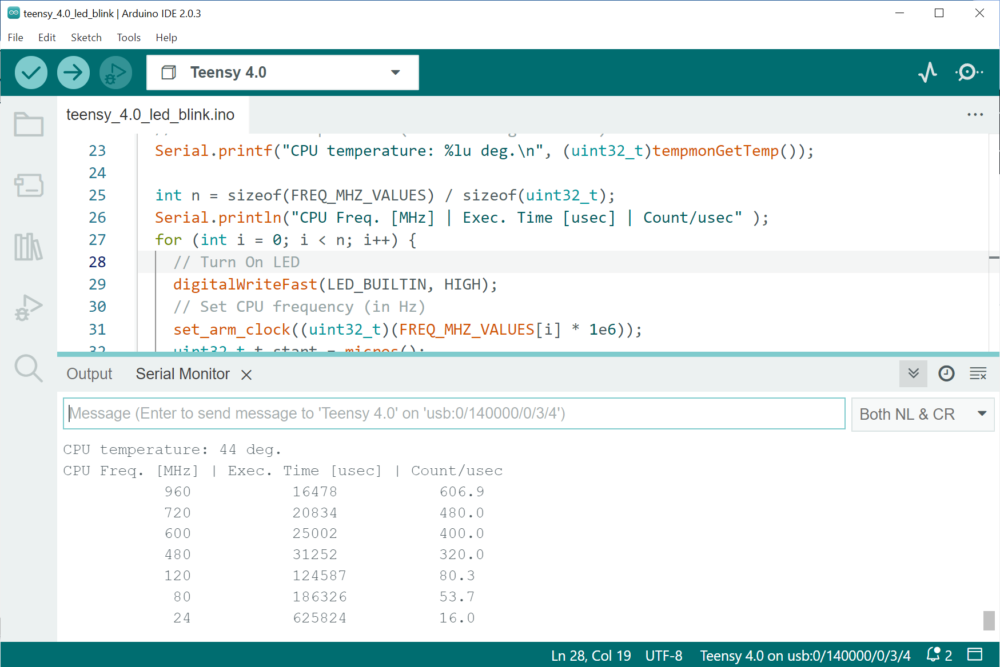
รูป: ตัวอย่างผลการทำงานของโค้ดตัวอย่างและข้อความที่ได้รับใน Arduino Serial Monitor
อีกตัวอย่างหนึ่งเป็นการทดลองใช้ Arduino Sketch - CoreMark
สำหรับบอร์ด Teensy 4.0 & 4.1 โดยให้ดาวน์โหลดเป็นไฟล์ .zip
มาจาก PaulStoffregen/CoreMark
แล้วนำมาแตกไฟล์ในไดเรกทอรีใหม่ และเปิดไฟล์ CoreMark.ino ที่อยู่ภายในด้วย Arduino IDE
ทำขั้นตอน Build & Upload
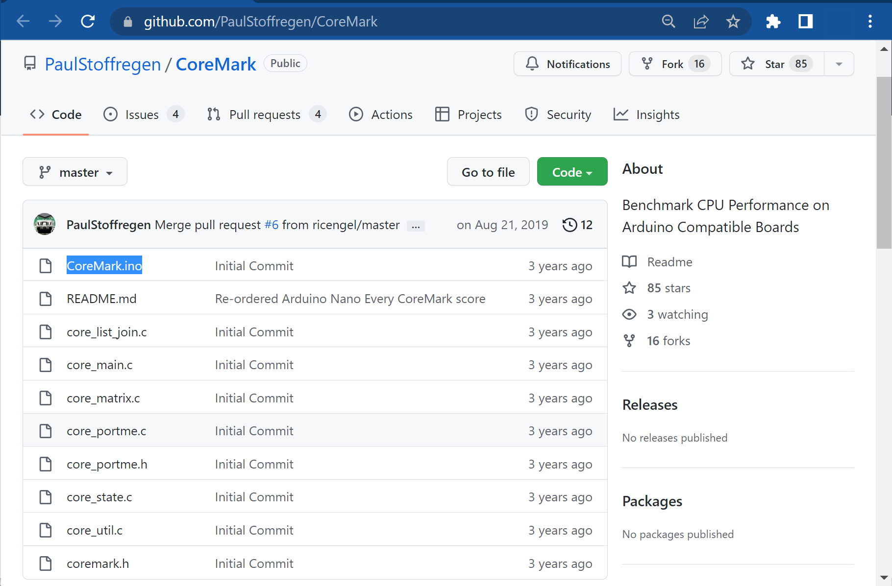
รูป: https://github.com/PaulStoffregen/CoreMark
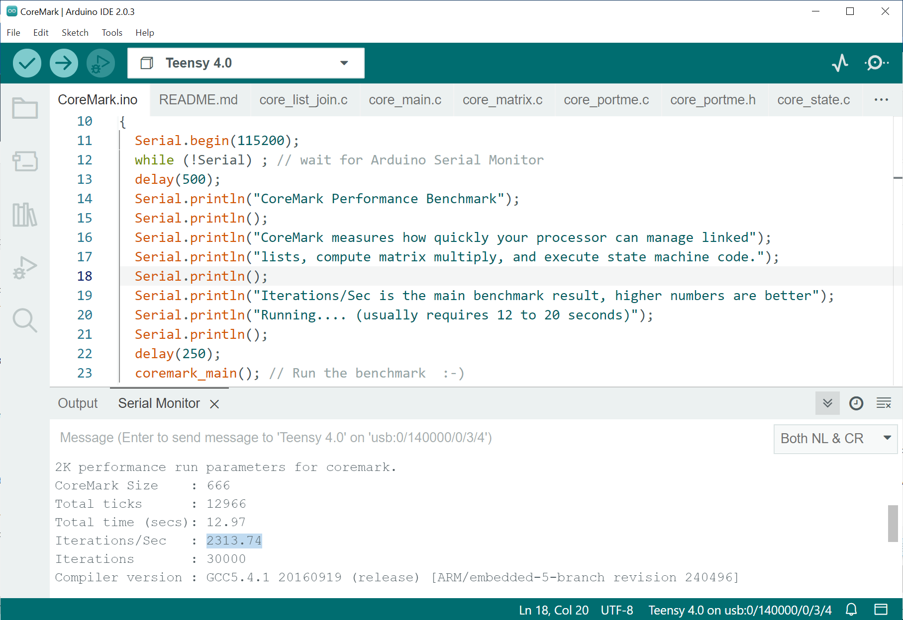
รูป: ตัวอย่างผลการทำงานของโค้ด CoreMark.ino (ใช้ความถี่ 600MHz)
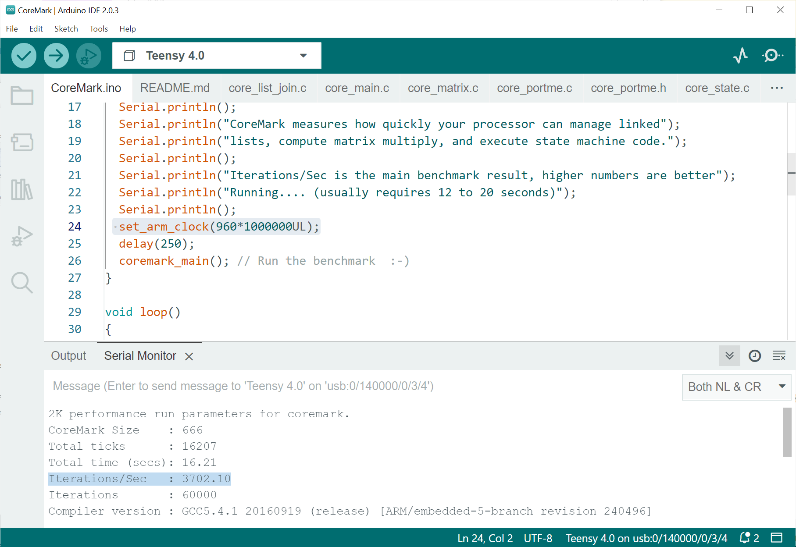
รูป: ตัวอย่างผลการทำงานของโค้ด CoreMark.ino (ใช้ความถี่ 900MHz)
จากผลการทดสอบด้วย Arduino Sketch CoreMark ถ้าใช้ความถี่สูงขึ้น
ก็จะได้ค่าตัวเลขที่สูงขึ้น เช่น เพิ่มความถี่จาก 600MHz เป็น 960MHz
จะได้ค่า CoreMark เพิ่มขึ้นจาก 2313.74 เป็น 3702.10
ข้อควรระวัง: ไม่แนะนำให้ใช้ความถี่สูงกว่า 600MHz เป็นระยะเวลานาน ถ้าไม่มีการระบายความร้อนที่ดีพอ
▷ ตัวอย่างการใช้งาน VSCode + PlatformIO#
นอกจาก Arduino IDE แล้ว การเขียนโปรแกรม Arduino สำหรับ Teensy 4.0 & 4.1 ก็สามารถทำได้โดยใช้ VSCode IDE และติดตั้ง PlatformIO (PIO) extension แล้วเปิดใช้งานไปที่ PIO Home สร้างโปรเจกต์ใหม่ ซึ่งจะต้องมีการตั้งชื่อโปรเจกต์ และเลือกไดเรกทอรีสำหรับโปรเจกต์ ในส่วนของวิธีการเขียนโค้ด ให้เลือก "Arduino Framework" ตามตัวอย่างต่อไปนี้
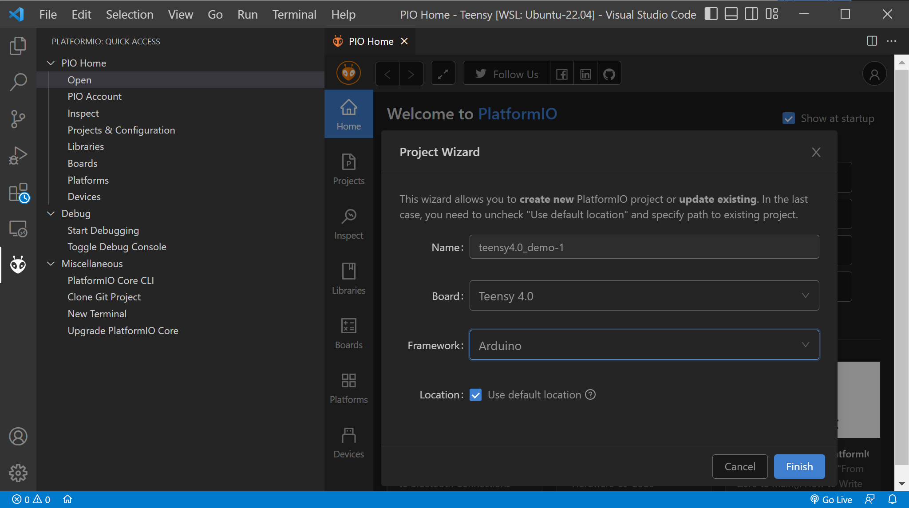
รูป: การสร้างโปรเจกต์ใหม่ใน VSCode IDE + PlatformIO สำหรับ Teensy 4.0
ในไฟล์ platformio.ini ของโปรเจกต์ ให้ตั้งค่าการใช้งานดังนี้
(อ้างอิงจาก: "PlatformIO Doc - Teensy 4.0")
[env:teensy40]
platform = teensy
board = teensy40
framework = arduino
upload_protocol = teensy-gui
;upload_protocol = teensy-cli
build_flags = -D USB_SERIAL
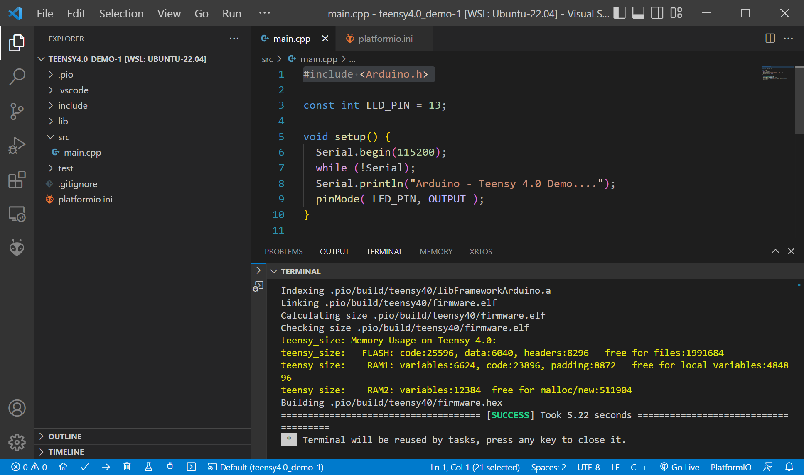
รูป: ขั้นตอนการคอมไพล์ Arduino Sketch ที่มีโค้ดตัวอย่าง
▷ กล่าวสรุป#
บอร์ดไมโครคอนโทรลเลอร์ Teensy มีให้เลือกใช้งานหลายรุ่นหลายแบบ และบอร์ดส่วนใหญ่ก็ใช้ชิป ไมโครคอนโทรลเลอร์ตระกูล ARM Cortex M4 หรือ M7 ของบริษัท Freescale / NXP และถือว่าเป็นบอร์ดไมโครคอนโทรลเลอร์ในกลุ่ม High-end ที่รองรับการเขียนโปรแกรมด้วย Arduino Framework บอร์ดมีขนาดเล็ก และสามารถเสียบขาลงบนเบรดบอร์ดได้ด้วย ดังนั้นจึงเป็นอีกหนึ่งตัวเลือกที่น่าสนใจ
This work is licensed under a Creative Commons Attribution-ShareAlike 4.0 International License.
Created: 2023-01-28 | Last Updated: 2023-01-29